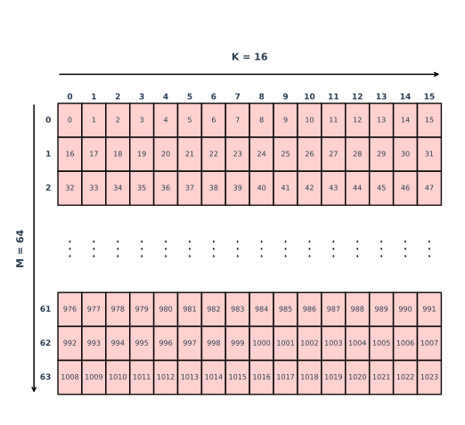
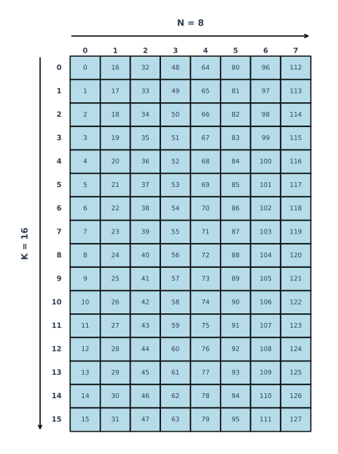
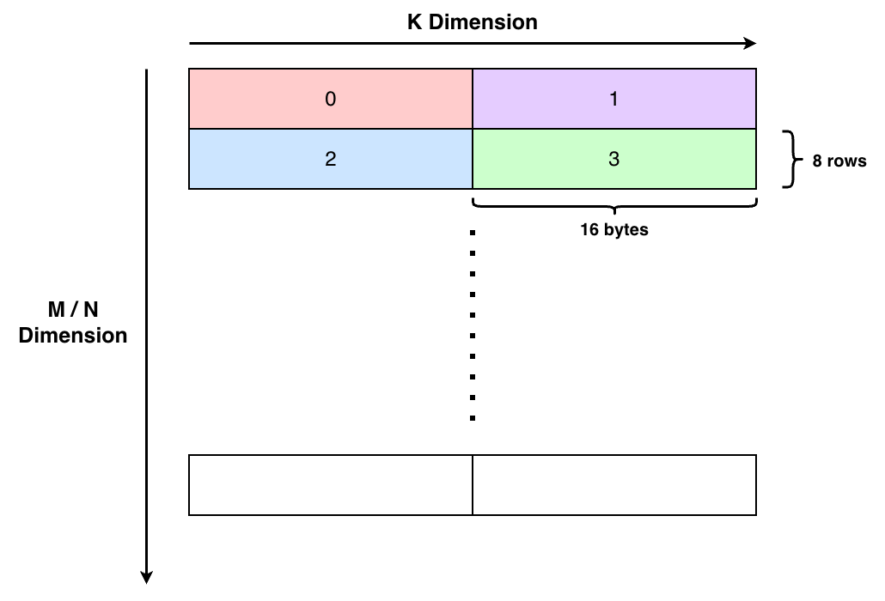
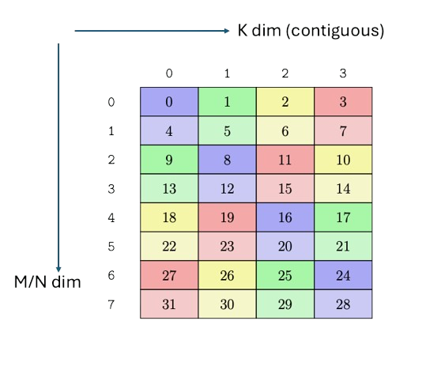

Lab 10: H100 Matrix Multiplication
Prologue: Logistics
Due Dates
For this lab, you’ll be turning in the following deliverables:
-
Checkpoint: Due Friday, November 14, 11:59 pm. Submit your completed code for Part 0, your responses to Prelab Questions 1-2, and a discussion of your progress on Part 1.
-
Final Submission: Due Friday, November 21, 11:59 pm. Submit your completed code for all parts of the lab (including Part 0), as well as a PDF writeup containing your answers for Question 1 of the final writeup.
Starter Code
You can get the starter code for this lab by cloning the lab repository:
Goals for This Lab
In Lab 9, we explored the H100’s Tensor Memory Accelerator (TMA),
learning how to move data from global to shared memory and building
software-managed pipelines to hide latency. In this lab, we’ll turn our
attention to the second major feature of the H100, the warp-group level tensor
core instructions, or wgmma.
Tensor cores account for the vast majority of our machine’s computational capability. On the H100, the tensor cores provide approximately 1000 TFLOPs of half-precision matrix multiply throughput. To put this in perspective, the standard FMA units can run at a half-precision throughput of 267.6 TFLOPs. This means that almost 80% of our machine’s half-precision throughput comes from tensor cores! To write high-performance kernels on the H100, we will need to understand how to use these tensor core instructions effectively.
Like in Lab 6, using tensor cores will require understanding not
just how to invoke the instructions themselves, but also how to organize data in
memory to match the expectations of these specialized units. Ultimately, our
goal is to combine TMA (for data movement) and wgmma (for compute) to write a
fast matrix multiplication kernel.
This lab has two main parts:
-
Part 0 (Prelab) introduces the
wgmmainstruction. You’ll learn how to invoke this instruction and set up data for it, working with both swizzled and non-swizzled memory formats. -
Part 1 combines TMA and
wgmmato implement a fast matrix multiplication kernel on the H100.
Part 0: The wgmma instruction
To use the wgmma instruction, we first need to understand how it differs from
the mma instruction we used in Lab 6.
-
The first difference is semantic. In
mma, the operation computesD = A × B + C, where the accumulatorCis separate from the outputD. Inwgmma, the operation instead computesD = A × B + D, meaning the output serves as its own accumulator. Additionally,wgmmaprovides optional transformations thatmmadoes not: you can transposeAorB, scale either matrix by1or-1, and set theDscale to either0(to clear the accumulator) or1(to accumulate). -
The
wgmmainstruction operates at the level of a warp group, a new organizational unit consisting of 4 warps, or 128 threads total.mma, on the other hand, operates on a single warp of 32 threads. -
The matrix tile sizes that
wgmmacan handle are significantly larger than those supported bymma. Forbf16, the data type we’ll focus on in this lab,wgmmasupports tiles withM = 64,K = 16, andNranging from 8 to 256 in steps of 8. For comparison, themmainstruction in Lab 6 usedM = 16,N = 8, andK = 16(or could also have been set toK = 8). These larger tiles enable greater data reuse. -
There are also differences in where the input and output matrices can reside. The
Amatrix can be in either registers or shared memory, while theBmatrix must be in shared memory. Unlikemma, theBmatrix no longer needs to be loaded into registers before use. The output matrixDmust still reside in registers. -
Finally, unlike
mma, thewgmmainstruction is asynchronous. When you issue awgmmainstruction, the warp group can immediately continue executing other instructions while the matrix multiply completes in the background.
In fact, most of these differences are visible in the PTX instruction itself.
Here is a concrete example of the wgmma instruction with size m64n256k16:
Now that we understand how wgmma differs from mma, let’s try invoking it.
We’ll start with non-swizzled data layouts before moving on to swizzled layouts.
Part 0: Invoking the wgmma instruction
The unswizzled wgmma instruction
Input Matrix Memory Layout
Since the A and B matrices reside in shared memory, their memory layout
(row-major or column-major) becomes important. Unlike with registers, where each
register is mapped to the same logical index regardless of the original layout,
shared memory layouts must be explicitly specified through the descriptors so
the hardware knows how to interpret the matrix data.
While wgmma supports both row-major and column-major variants for the input
matrices, for simplicity we’ll use a consistent convention throughout this lab for
matrices in both global and shared memory:
A is stored in row-major order, while B is stored in column-major order. For simplicity,
we will refer to this as both A and B being K-major. In all cases, we also make the output
matrix M-major (i.e. stored as NxM) for consistency with the cuBLAS API.


Core Matrices
The wgmma instruction operates on a core matrix (as referred to in the PTX
documentation) or atom (as CUTLASS calls it). A core matrix represents the
fundamental unit of data that must be contiguous, or tightly packed together in
memory. For the non-swizzled case, each core matrix is 8 × 16 bytes in size. It is important to note that the values within each core matrix must be contiguous and K-major, meaning that you can’t directly copy the whole matrix
from global memory into shared, since the condition that core matrices must be contiguous will be violated.
While each core matrix must itself be contiguous (8 × 16 bytes with no gaps),
there can be gaps between different core matrices. The spacing between
consecutive core matrices in the K dimension is given by the leading byte offset,
while the spacing between consecutive core matrices in the M or N dimension is given by the stride byte offset.
In practice, we tell wgmma about our shared memory using
shared memory descriptors. The descriptor is set up in a special
format. We’ve
provided a wrapper function construct_smem_desc that encodes descriptors in
this format. This function takes three parameters in this order:
-
The address of the shared memory buffer.
-
The leading byte offset.
-
The stride byte offset.
Now, let’s examine what these core matrices look
like in an example, and how wgmma expects these matrices to be laid out in shared memory.
We’ll start with the smallest wgmma variant, where M=64, K=16, and N=8 and the matrices are K-major.

In this case, let’s calculate the leading byte offset and the stride byte offset for the M*K matrix. Moving in the
K direction, core matrices are adjacent, with spacing at 128 bytes. Hence, the leading byte offset is 128 bytes. Moving
in the M/N direction, core matrices are separated by 2, with spacing at 2*128=256 bytes. Hence, the stride byte offset is 256 bytes. The important thing
to take away is that leading byte offset = moving in the K dimension and stride byte offset = moving in the M/N dimension.
Note: Like TMA, operations on wgmma happen in the async proxy, and you
must use an async proxy fence to ensure that the wgmma engine sees the most
up-to-date values.
Output Matrix Register Layout
The output matrix D, on the other hand, resides in registers. Like before, the
values are scattered across registers per thread. In our example, each thread
holds (64 × 8) / 128 = 4 values. These values are distributed across threads as
follows (figure from PTX documentation):

Mathematically, lane x in warp y handles values with M = 16y + (0, 8) * floor(x/4) and N that satisfy (N//2)%4 = x % 4. Intuitively, this means that
each warp processes a cluster of 16 values of M. Within each warp, each set of four threads processes two values of M, reading values in strided 32-byte accesses
(correspondingly 2 bf16 values per thread).
Synchronizing Asynchronous wgmma Operations
As we mentioned earlier, wgmma is asynchronous. The last piece to put in place
is the ability to synchronize wgmma operations. wgmma uses a commit group
style mechanism, but there are two significant differences from the commit
group mechanisms we’ve used before.
First, there is ordering within a group. There is an ordering guarantee
between different wgmma operations committed in the same group that operate on
the same output registers. The ordering is enforced in the order the operations
were issued. You can choose to wait for a sequence of operations by issuing them
into the same group. Then, as before, you commit and wait on pending groups.
Second, the commit operations happen at warp group granularity. For both
cp.async and cp.async_bulk, the operations were issued per thread, and as
such the commit group was committed per thread. With wgmma, the warp group
issues the commit group instruction together. These instructions must be aligned
across all threads in the warp group. Similarly, the wait for pending wgmma
operations must also happen at warp group granularity.
We provide the following helper functions to synchronize wgmma operations:
-
warpgroup_arrive()performs a memory fence across the warpgroup and ensures that all registers/shared memory across the warpgroup has been written into. -
wgmma_commit()commits the current group ofwgmmaoperations. -
wgmma_wait<N>()waits until all butNpending groups ofwgmmaoperations have completed.
Putting It All Together
Using these APIs, you now have the tools to implement a simple matrix multiplication kernel using the
wgmma interface:
Deliverable: Call a single M=64, N=8, K=16
wgmmain0-m64n8k16-wgmma.cu. This should involve only making a single call, but you will need to reorganize the data in shared memory to meet the core matrix layout.
Prelab Question 1: How did you layout your shared memory to be compatible with the
wgmmainterface (what were the corresponding leading byte offset and stride byte offset)? How did you manage synchronization?
Invoking the 64-byte swizzled wgmma instruction
In the previous section, we worked with the unswizzled wgmma instruction,
which organizes data at a 8 × 16 byte granularity. The swizzled variants instead process
different granularities depending on the swizzle mode:
- 32-byte swizzled requires repacking at 8 × 32 bytes (with each 32 bytes swizzled)
- 64-byte swizzled requires repacking at 8 × 64 bytes (with each 64 bytes swizzled)
- 128-byte swizzled requires repacking at 8 × 128 bytes (with each 128 bytes swizzled)
In this section, we’ll invoke the 64-byte swizzled variant. Within each 64-byte swizzled core matrix, elements are packed into 128-byte chunks, which are then swizzled. As an
example, we show the swizzling layout below (figure from PTX documentation).
Please note that each number corresponds to a 128-byte chunk (or correspondingly, 8 packed bf16 elements).

Outside of the size of the core matrix, the main difference between the swizzled case
and the unswizzled case is how we set up the shared memory descriptor. For
swizzled descriptors, the leading byte offset no longer matters and is assumed
to be 1. The stride byte offset remains conceptually the same, but now
represents the offset needed to move from one 8 × 64 byte core matrix to the
next in the M/N dimension.
Because the 64-byte swizzle mode requires at least 64 bytes in the K dimension,
we will now use K = 32 (32 elements × 2 bytes per bf16 = 64 bytes). With this
choice, you will not need to repack the data as we did in the unswizzled
case—it’s already in the correct form, since we don’t need multiple core matrices to fill the entire K dimension!
However, you will need to swizzle each core matrix. You are free to use a TMA load if you wish, or you can use your own swizzle function
from Lab 9.
Also, since K = 32, you will now require 2 wgmma operations. The first computes K = 0 to 15, and the second computes K = 16 to 31. To make these two calls, you will
need to invoke the first wgmma at offset 0, and then invoke the second at
offset 16 elements (32 bytes). You do not need to compute these offsets in
swizzled coordinates, they should work as byte offsets directly because of the way
the WGMMA unit is built. You can synchronize these two operations as you wish, either by waiting on each
individually, or by committing them in the same group and waiting on them
together.
Deliverable: Call two
M=64, N=8, K=1664-byte-swizzledwgmmaoperations in1-swizzle-m64n8k32-wgmma.cuto compute a fullM=64, N=8, K=32matrix multiplication. You will need to swizzle the input data appropriately before invoking thewgmmainstructions.
Prelab Question 2: How did you layout your shared memory to be compatible with the swizzled
wgmmainterface (what were the corresponding leading byte offset and stride byte offset)? How did you manage synchronization?
Part 1: Matrix Multiplication
Now that you have experience with both TMA and wgmma, it’s time to write an
H100 matrix multiplication kernel!
In this part, you will implement a matrix multiplication kernel for matrices of size M = 8192, N = 8192, K = 8192. The goal is to achieve performance close to cuBLAS peak performance, which is around at 798 TFLOPs.
Deliverable: Implement a high-performance matrix multiplication kernel in
h100-matmul.cuthat computesC = A × BforM = 8192, N = 8192, K = 8192. As before, matrix A and B are bothK-major, and matrix C isM-major. Your implementation will likely need to leverage both TMA for efficient data movement andwgmmafor computation.
Question 1 for final write-up: What percentage of peak cuBLAS performance were you able to achieve? How did you manage the TMA and
wgmmainterfaces along with your shared memory and registers? What was your model for synchronization? What were the key tradeoffs that you encountered in designing your kernel? Any interesting bugs to report?
This part is open-ended, and you should use your experience from Labs 4, 5, and 6 to guide your exploration.
However, you may want to consider using larger wgmma operations,
as the bf16 tensor cores on the H100 support up to N = 256 in steps of 8, keeping
M = 64, K = 16 to be constant. Using larger N dimensions allows each warp group to compute more output values
per instruction, which can significantly improve performance by increasing data reuse and reducing instruction
overhead. If you are interested in exploring this direction, we implement a few sample wgmma sizes in
wgmma-interface.cuh and also provide a skeleton in optional-wgmma-setup.cu for testing additional wgmma problem sizes.
Overall, we also expect the performance cutoff for this part of the lab to be no lower than 80% of cuBLAS peak performance. Stay tuned for more suggestions and exact cutoffs in the coming days!